- 1 Introduction
- 2 Architecture
- 3 New solution
- 4 Domain component
- 5 Model classes
- 6 Web API
- 7 Application component
- 8 File data component
- 9 File data storage
- 10 First feature
- 11 Logic layer
- 12 Web API Controller
- 13 User DAO
- 14 Finalize create user
- 15 Test create user
- 16 Get users feature
- 17 Get users logic
- 18 Get users dao
- 19 Get users controller
- 20 Add Todo feature
- 21 Add Todo application layer
- 22 Add Todo data layer
- 23 Add Todo Web API
- 24 Setup services
- 25 View Todos
- 26 View Todos logic
- 27 View Todos Data
- 28 View Todos Web API
- 29 Complete Todo feature
- 30 Complete Todo logic
- 31 Complete Todo DAO
- 32 Complete Todo endpoint
- 33 Delete Todo feature
- 34 Delete Todo Logic
- 35 Delete Todo DAO
- 36 Delete Todo endpoint
- 37 Get Todo by id
- 38 Conclusion
Introduction
This is the first part of a 3 part tutorial series (at least according to the current plan).
The system will be a basic Todo-app. You will be able to create Todo items, update and delete them. Get an overview of all Items, and a few other basic features. This kind of app is essentially a "Hello World".
Together, all three tutorials will go over how to:
- create a Web API, initially using a file to store data in JSON format
- create a Blazor WASM front end, which will interact with the Web API
- swap out the file storage with data base storage, using Entity Framework Core
This tutorial will cover the first point: a Web API. It will result in a client/server system with a database.
GitHub
All code will be available on GitHub. Different parts of the tutorial may be available on different branches.
Here's an overview of the branches:
001_BasicSetup: will contain the setup of the components, model classes, and the FileContext which stores data.
002_AddUser: This will contain the code for the feature of adding a new User.
003_GetUsers: This contains code for the feature of retrieving Users.
004_AddTodo: This branch is for adding a new Todo.
005_GetTodos: Here we retrieve Todos.
006_CompleteTodo: This covers updating a Todo.
007_DeleteTodo: This feature allows us to delete a Todo.
Code mismatch
There is a convention that asynchronous methods (which returns Task) have method names suffixed with "Async", e.g. CreateAsync(), or GetUserByIdAsyn().
I did not remember to do this until half way through. So, I'm going over the previous parts and renaming everything. I may have forgotten some places, so the code examples in this tutorial, may have method names not matching entirely the names on GitHub. You're welcome to let me know, if you find a mismatch.
A final comment
I have been renaming things over and over in this tutorial. I hope I have made the necessary updates to the text here, whenever things were updated in the code.
There are only two hard things in Computer Science: cache invalidation, naming things, and off-by-one errors.
-- Phil Karlton
Functional requirements
As mentioned, we are doing a Todo app. Below are the user stories, which we will implement
- As a user of the system I can add a new User, so that Todos can be assigned to Users.
- As a User I can get a list of all existing Users, so that I can assign Todos to them
- As a User I can add a new Todo, so that I can remember important things
- As a User I can view all or filtered Todos, so that I can remember what to do
- As a User I can complete a Todo, so that I can mark things as done
- As a User I can delete a Todo, so that I can clean up
Architecture intro
First we will take a look at the planned architecture of the Web API.
On the server side, i.e. the Web API, we will use a classic 3-layered architecture:
- Network layer to receive requests from clients, using REST controllers
- Application layer, responsible for all business logic
- Data access layer, responsible for storing/retrieve data from storage (initially a file)
We will let us inspire by well-known architecture approaches: Clean architecture, Onion architecture, Hexagon architecture. The interested reader is encouraged to research more about these. I will cover the bare minimum here.
They are very similar ideas, and all advocate the layered approach, each layer separated by interfaces. This should sound familiar, we are applying the Dependency Inversion Principle.
Below is the classic diagram for clean architecture (it is an onion of layers, therefore sometimes called Onion architecture):
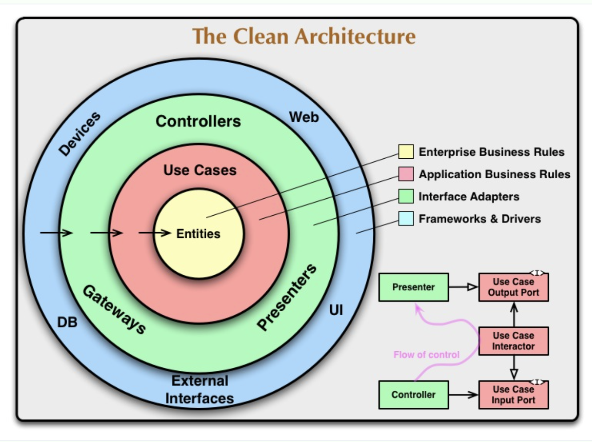
It is circular, or shaped as an onion. The idea is the closer to the center, the less likely to change.
Your domain model classes are in the yellow Entities. They don't change.
The red circle, Use Cases, is your logic. That is also fairly fixed, once in place.
The green layer is in our case REST controllers, i.e. our Web API, and the Data Access implementations,
i.e. storing data in JSON file or use EFC to database. These are frameworks and libraries, which might be changed.
If we unfold the diagram a little bit, it looks more like your familiar layered system, just shuffled around, so the higher layers are the "unstable" ones.

The point to notice in both cases are the dependencies. Outer layers in the onion knows about inner layers, not vice versa. And in the unfolded version, upper layers know about those below, and not vice versa. We will come back to these dependencies, and why this is the way.
Architecture overview
This tutorial will be a larger exercise, perhaps sort of a tiny mini-SEP. As such, we wish to have a better code-structure for our program. You have previously been taught the SOLID design principles. They usually apply to single methods, or classes. In this project we will attempt to apply Clean Architecture, which is sort of like applying the SOLID principles on a larger scale.
The final system will consist of 2 tiers (client and server), and a total of 5 layers. Each layer has a specific responsibility.
Below is a layer diagram for an overview:
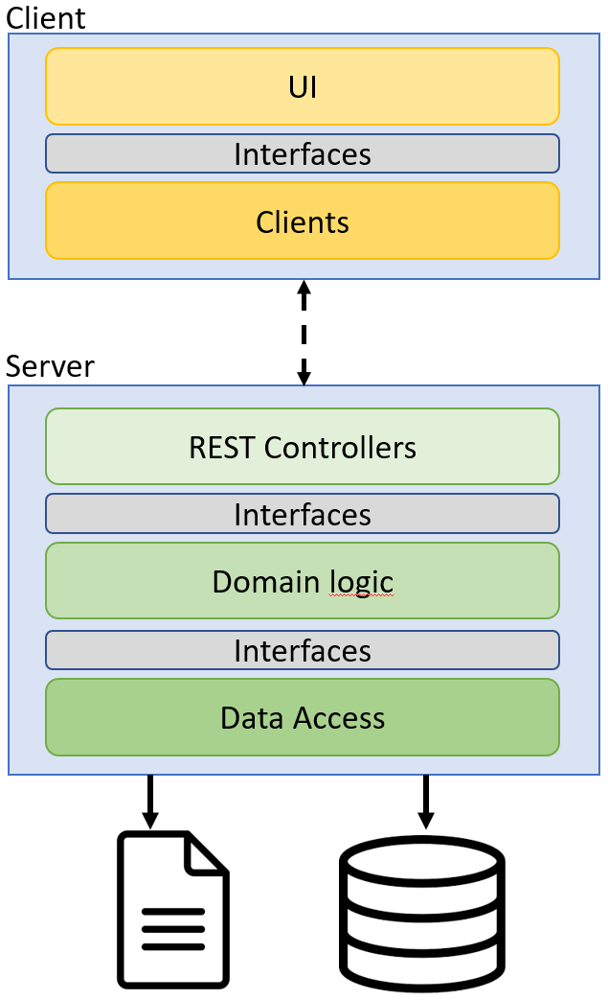
The client will be a Blazor WASM application, using standard HttpClients to make requests to the server.
The server will use a REST Web API to receive the above mentioned requests. Initially we will store data in a file, using json format. Later, we will swap it out with a database, using Entity Framework Core and SQLite.
This means, we must design the system, so that this swapping out is easy (relatively speaking), and affects as little of the rest of the system as possible. We will apply the Dependency Inversion Principle, and hide the Data Access layer behind interfaces.
Component diagram
The following diagram shows the components (grey boxes) of our project. The green box contains everything client side, and the blue box is the server side.
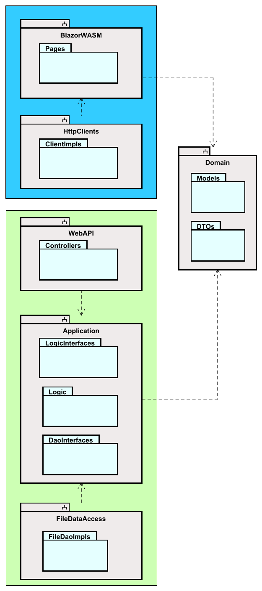
The grey boxes are "components". I will steal the following explanation from Robert C. Martin's book "Clean Architecture":
Components are units of deployment. They are the smallets entities that can be deployed as part of a system. In Java, they are jar files. In .NET they are DDLs.
In Java, components are often organized in modules. In .NET, components can be organized into various projects. Components can be considered a bit like lego-building blocks, with the intention that you use these blocks to construct the system. They provide modularity, so building-blocks can easily be swapped out (in theory, at least).
There will be two Data Access components, and we can use either one. We will start with FileDataAccess and later swap it out with EfcDataAccess.
So, this layered approach makes the system more modular: we can strip out a layer e.g. if we want to use a different type of data access, or a different type of network technology. We will go with REST for this tutorial series, but later we might want to swap to gRPC or SignalR or something else. We can fairly easy remove a "block"/component, and put in something different.
The one thing, which stays fairly static, are the business rules. They are less likely to change, and they exist in the Application component. They do not depend on any specific technology, e.g. REST or PostgreSQL, and shouldn't care about that. This is also why, we put both Logic- and Dao-interfaces here, in this component. The Logic classes will always provide access to themselves through the Logic interfaces, and they will always need to retrieve and store data through the Dao interfaces. But the details of the layers above and below, i.e. network and data access, are irrelevant.
This is Domain Driven Design, which you have probably heard about before. We focus on the domain first.
You may notice that arrows point into the Application component, and no arrow points out. This means, the Application does not depend on anything else (except the Domain classes)
The Domain component contains Model classes, in this tutorial that will be a User class, and a Todo class.
These classes are known by all components.
We will in this component also put other relevant things, which most of the program might need to know about. That could be Data Transfer Objects.
Data Transfer Objects (DTOs)
What are these? Well, you have your domain objects, e.g. User and Todo. These are in this case somewhat small in the number of properties, but in a real system they may grow large, and they maybe have associations to other model classes.
Sometimes the front end does not need all the data of a model class. You can then create a new class, a DTO, which will contain only the data you are going to need. We will use these classes, so you will see a few examples.
Class diagram
Below, you will find a rough, low-detailed class diagram of the resulting system, after the 3rd tutorial.
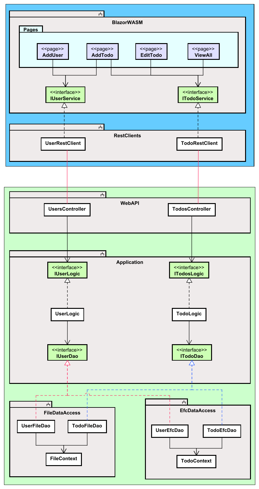
The blue box encapsulates the client, and the green box is the server.
Server design
The server consist of the 3 layers mentioned above:
- WebAPI is the entry point to the server, the Controller classes receive REST requests.
- The Application component contains classes which deal with domain logic and rules. E.g. we might validate a Todo item, the user wishes to create.
- Data access to provide access to data storage, either as JSON in a file or data stored in a database.
The architecture may change a bit, as the tutorial moves forward.
There are different approaches on how to structure these components. We will do "by layer", because that is simpler. However, in your professional career, you will probably encounter a separation "by feature". This is an often recommended approach, however much more complicated. Basically, if you want to try it out for SEP3: Each new user story, you implement, will go into a new component, or at least a separate directory. The idea is that everything related to a feature is located together. This is not always easy to follow.
Repositories
In the .NET world you may encounter Repositories. These act a little bit like Data Access Objects, and it can be difficult to find the difference.
People are not entirely in agreement either about the differences.
The point is that we may sometime call them data access objects, or sometimes repositories.
The best definition, I could find is that Data Access Objects interact with the database, and there is one DAO per model class.
The Repositories interact with DAOs, sometimes multiple.
But in smaller applications this will not always be the case, and DAOs and repositories are used interchangeably.
Client design
The client will (currently planned) have 4 views, or "pages", with which the user can interact.
Each page will know about a Service interface, which provides functionality to create, get, update, delete either Users or Todos. We have attempted to apply Interface Segregation Principle here.
These interfaces are implemented by client classes, which can make requests to the server.
The interfaces are in a separate component, so that we can easily change the UI framework, or we can swap out the client classes, to match whatever network technology the server uses. We could put the interfaces in either BlazorWASM or Clients component, but given that either UI or network can be swapped out, the interfaces would be removed too, and cause problems.
This may seem a bit overwhelming, but we will take it step by step, holding hands along the way. You will be safe. No worries.
More reading
The interested reader can look through this post, containing a good overview of various architectures
Creating a new solution
We are going to start out with a new empty solution. You might name it "TodoAppWasm", or something else.
Follow the steps below to create a new solution:

Clicking New... will open the dialog for creating a new solution, see below.
1 Select Empty Solution
2 Give your solution a name. I have multiple Todo apps by now, so I have called this one "BlazorTodoApp"
3 You can choose to add a git repository, if you wish.
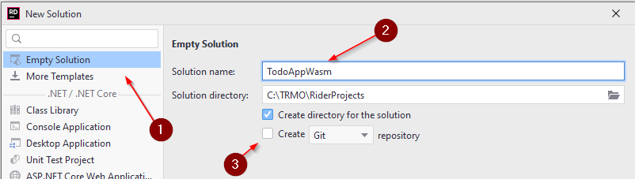
Your new empty solution should now look like this:

I.e. it's pretty empty. Next up, we will talk about the solution structure, which was displayed on the previous slide.
Domain component
A thing which was abstracted away from the architecture diagram, is where to put out data model classes, i.e. User and Todo.
These will go into their own component, Shared. Having these classes in a separate component, means that both the client and the server can reference that component. It ensures that if a change is made to one of the classes, both client and server will still use the same version.
New project (component)
Create a new Class Library project, by right-clicking your solution:

This will open a familiar dialog, where you can create a Class Library 1.
Give the project a name 2, I have called mine "Domain", in some examples it is called Models (notice wrong name in the screenshot).
In your case, you can probably only select net6.0 3, or later.
Finally, press Create 4.
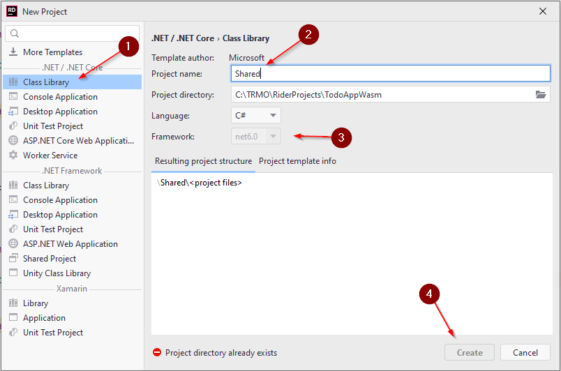
A Class Library is a type of project which cannot be run, it instead contains functionality. All NuGet packages are generally libraries with functionality, you can import into your system. Similar to some Jar files in Java, however, other Jar files can actually be executed. In .NET we distinguish between .exe files: executables, and .dll files: dynamic link libraries.
Your Domain component will just contain the Model classes (and a few other things), there is nothing to run.
The new project, Domain, will contain a single class, ´Class1.cs', you can just delete this.
Model classes
We are going to need to classes: User and Todo.
Todo
Inside your Shared project, create a new directory: Models. In here create a new class, call it Todo.
The Todo class needs properties for the data, a Todo should hold:
public class Todo
{
public int Id { get; set; }
public User Owner { get; }
public string Title { get; }
public bool IsCompleted { get; }
public Todo(User owner, string title)
{
Owner = owner;
Title = title;
}
}
We have created a constructor, which only takes two of the four properties as arguments.
The intention is that the Id should be set automatically by whatever class persists the data,
and you cannot create a Todo, which is initially already completed,
so we just default IsCompleted to false, by not setting it.
User
We also need a User object. Create a new class, "User", inside the "Models" directory. It should look like this:
public class User
{
public int Id { get; set; }
public string UserName { get; set; }
}
In many applications the user name is unique, which might make the Id property redundant.
We could, in fact, leave out Id,
but I choose to keep it, because that makes it easier to include a feature, where a user can change their user name.
It also adds a tiny bit of extra complexity to the system, which might be good as an example.
How to connect models
Now, we have a clear connection between Todos and Users.
The Todo has an Owner, which should reference the User to which this Todo is assigned.
Alternatively, the User class could have a property with the type of a List of Todos, e.g.:
public List<Todo> Todos { get; set; }
We could have properties in both directions, but bidirectional associations in the domain model classes can be difficult to maintain. Having just one-direction association will, however, potentially make retrieving data a bit more complex. So, either approach has drawbacks.
Given that it is a Todo app, the Todo is a key model, and we let the Todo keep track of its assignee, instead of the other way around.
Creating the Web API
Next up, let's create the Web API component, i.e. the gate-way into our server.
Create a new project, by right-clicking your solution again, and opening the "New Project" wizard.
This time, we need a Web API:
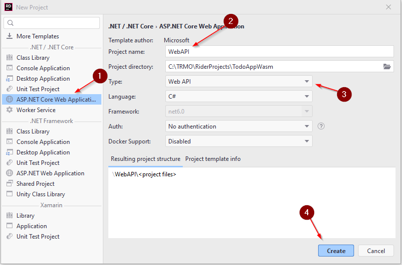
1 Web API templates are found under the "ASP.NET Core Web Applications".
2 Give it a name.
3 Select "Web API" here. There are many options. Make sure it is API, not APP. Two different things. We need an API.
Verify language is C#, net6.0 or later, no Authentication, and no Docker Support.
4 Create the project.
Test
You should now be able to run the Web API, either by right-clicking on the project folder and select "run"
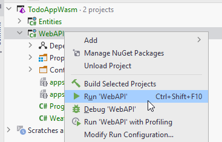
Or by clicking the green arrow on the top right, with the WebAPI selected in the drop down menu:
Swagger
When running the Web API, your browser should open a Swagger page, which is a built in client you can use to test your Web API. It's pretty neat.
Currently there is just a GET endpoint, which returns some random weather data.
We will obviously change that later, but we still need a few more components, before we really can get started on the good stuff.
Application component
Create another Class Library project, call it Application. You may delete the default class, Class1.cs.
This component will house our domain logic. This is where we will validate data from the client application.
We leave it for now. We will focus on implementing a feature at a time, so we will come back to this component, when we start on the first feature.
We still need a bit more setup first, though.
File Data Component
Now, we just need a final Class Library, call it "FileData", and delete the default class included.
Your solution should now look like this
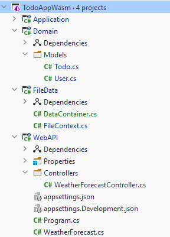
We have components for the three layers: network, domain, data access. And a component for our model classes, and other domain stuff.
Dependencies
Some components need to know about others, in order to use their functionality or classes.
The Data Access Object classes in FileData need to implement interfaces located in Application, so we need a dependency from FileData to Application.
It is done like this:
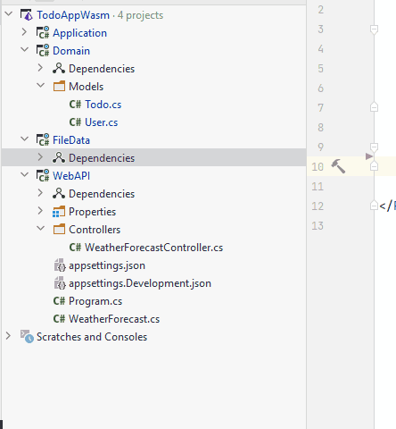
Now, also add the following dependencies:
- Application -> Domain
- WebAPI -> Application
- WebAPI -> FileData
Now, because Application -> Domain, and FileData -> Application, we get a "transitive" dependency: FileData -> Application -> Domain. The point is, FileData gets access to the model classes in Domain.'
Next up
Now we are almost ready to start implementing functionality.
We will start by getting the storage functionality in place.
File Data
We are going to store the data as a string in JSON format. We could use binary, but sometimes it is just nice to be able to inspect the data in storage, or even quickly modify it. So, JSON is an easy way to go.
We are going to need three classes for this: Two DAO classes, and a "Context" class.
This latter class will be the one responsible for reading and writing to/from the file. The two DAO classes will come later, once we need them. We work by one feature at a time.
We do it like this, because it will be very similar to how we are later going to use Entity Framework Core.
Data container
First, we will create a class to hold the data. Having all data in one class makes it easier to write it to a file, it is a bit of a hack, and this doesn't scale. We will essentially load all data into memory. But, the JSON storage is just for our initial minimum viable product, or proof of concept.
Inside FileData component create a class: DataContainer.
It looks like this:
public class DataContainer
{
public ICollection<User> Users { get; set; }
public ICollection<Todo> Todos { get; set; }
}
Fix import errors.
The point is, we will read data from the file and load into these two collections. The collections are essentially our database tables. If we were to need more model classes in the future, e.g. Category, Project, or something else, we would add more collections.
We could use IList, List or other types of collections,
but the Collection will behave similar to how we can interact with the database later on, using Entity Framework Core.
So we use ICollection to practice.
File context
This class is responsible for reading and writing the data from/to the file.
First, we create the FileContext class in the FileData project.
The final version of the class can be found here.
Fields
You need to define the path to the file, which should hold the data. And we need two collections, one for Users and one for Todos.
private const string filePath = "data.json";
private DataContainer? dataContainer;
public ICollection<Todo> Todos
{
get
{
LoadData();
return dataContainer!.Todos;
}
}
public ICollection<User> Users
{
get
{
LoadData();
return dataContainer!.Users;
}
}
Line 1 is just the file path.
Line 2 is the DataContainer, which after being loaded, will keep all our data.
It is obviously not very efficient or scalable, because we are essentially keeping the entire database in memory.
If the database contains a lot of data, we will not have enough memory.
However, for this toy example, it is just fine.
Notice the variable is nullable, marked with the "?", indicating we allow this field to be null. We will regularly reset the data, clear it out and reload it.
Then two properties. They both attempt to lazy load the data. Then the relevant collection is returned.
The LoadData method will check if the data is loaded. If not, i.e. dataContainer is null, then the data is loaded. See below.
Load data
We need a method to read from the file, so we can retrieve data.
private void LoadData()
{
if (dataContainer != null) return;
if (!File.Exists(filePath))
{
dataContainer = new ()
{
Todos = new List<Todo>(),
Users = new List<User>()
};
return;
}
string content = File.ReadAllText(filePath);
dataContainer = JsonSerializer.Deserialize<DataContainer>(content);
}
What's going on here?
The method is private, because this class should be responsible for determining when to load data.
No outside class should tell this class to load data.
First we check if the data is already loaded, and if so, we return.
Then we check if there is a file, and if not, we just create a new "empty" DataContainer.
If there is a file:
We read all the content of the file, it returns a string.
Then that string is deserialized into a DataContainer, and assigned to the field variable.
Save changes
The purpose of this method is to take the content of the DataContainer field, and put into the file.
public void SaveChanges()
{
string serialized = JsonSerializer.Serialize(dataContainer);
File.WriteAllText(filePath, serialized);
dataContainer = null;
}
Later, when we work with databases through Entity Framework Core, you will also need to call SaveChanges after interacting with the database.
So, we practice the workflow here.
The DataContainer is serialized to JSON, then written to the file. Then the field is cleared.
Efficiency?
We are going to save the Domain objects as they are. This means multiple Todos may reference the same User, and so in the JSON file we will find the same User data multiple times.
Obviously this is not particular efficient, having this duplicate data. It is, however, a flaw we will accept for the JSON storage functionality, as this is just a placeholder until we get the actual database in place.
This database will be normalized, and we will be rid of duplicate data.
GitHub
Here ends the first branch on GitHub, the basic setup. The next part will be on a new branch.
First Feature, Create User
We are ready to start our first feature:
As a User I can add a new User, so that Todos can be assigned to Users.
Okay, a user can create a User, sounds a bit funky. We have the user interacting with the system, and we have information about users in the system.
Now, this is a Todo app, so we might consider whether adding a Todo item should be the most essential, and therefore be developed first. However, when creating a Todo it should be assigned to a User, so we do the User stuff first. Otherwise we would have to go back and revise a finished feature. That's doable, but I don't want to.
We have no login-system, so everyone can create new users in the system.
The idea is just that a Todo item is assigned to someone.
We will approach this as Domain Driven Design, i.e. start with the logic of how adding a Todo should work, and not care about where the data comes from (the Web API) or how the data is stored (the file).
Logic
So, we will start with the application layer, where the domain logic resides. As previously mentioned, the network and data storage are just details. They come later. The domain logic, however, can be unit tested and verified, before we start on the other layers (We will not do unit testing in this tutorial, though).
What is involved in creating a new user? Well, we don't have that much data about a user, and few rules, it is going to be fairly simple.
GitHub
This feature is located in the branch 002_AddUser.
Logic Layer
This is the Application component, we need the "entry"-interfaces, the logic class, and the Data Access Object interfaces. Nothing else outside of that for now.
This is the goal for the current slide:
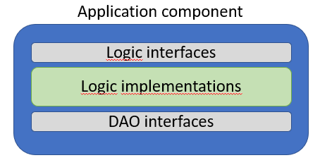
The logic interface
First, we need to define the access point to the domain logic, i.e. the interface.
Inside the Application component, create a new folder called "LogicInterfaces".
Inside this folder, we will put the interface which provides access to the User logic. Create a new interface, call it "IUserLogic". We will put a method here further down.
The data needed, the DTO
The data we need to provide to create a User can be considered part of the contract.
In our case it is just a user name. Later, we might need other things like password, email, real name, etc.
We could here use the User class, we previously defined in the Domain component.
However, that class contains more properties than what is needed in our case of creating a new User.
We could just leave some properties empty, but that may not always be convenient. In our case, we will instead create a new DTO with just the properties needed to create a new User.
Inside Domain component, create a new directory, call it DTOs.
Inside this directory, create the following class:
public class UserCreationDto
{
public string UserName { get;}
public UserCreationDto(string userName)
{
UserName = userName;
}
}
Do we really need a class just to send that one string around? Strictly speaking, no.
But, if you have several methods all the way from your front end to here, which just takes a string, and later you figure out, you also need a password, how many method signatures do you have to modify?
At least a handful.
If we wrap all relevant data (just the user name for now) in an object,
we can easily add another property to the class,
and we will have to modify a lot fewer method signatures.
I include the constructor here, because this object should have a "UserName" after its creation.
Comment on DTOs
These type of classes, the DTOs, are used in various ways.
Our approach is a bit loose, because all layers will know about the DTOs,
and all layers will know about the domain objects.
This causes some dependencies, which we will accept in this case. I.e. if we modify a DTO all layers are affected.
Sometimes a more strict separation is applied. Again, multiple approaches are available.
One approach could be:

In the above image one of the responsibilities of the application layer, i.e. Domain Logic, will then be to translate between DTOs and Domain Objects.
This will, however, result in many DTOs, which can be in-comprehensive.
On the other hand, the separation is better. We must weigh the pros and cons.
We will apply the loose approach for convenience in this smaller example.
Logic Interface Content
Now we can define the method in IUserLogic interface:
public interface IUserLogic
{
Task<User> CreateAsync(UserCreationDto userToCreate);
}
Fix import errors.
The return type is Task<User> because we may want to do some work asynchronously. There is nothing yet, but when the database is attached and we use EFC, things will have to be asynchronous.
The data needed is wrapped in the UserCreationDto, i.e. the argument.
And the data returned is the finalized User object.
In our case, an Id is generated for the new User. In other casees more data could be computed and set. Maybe we want to display the final result to the user of the system, as a kind of verification.
This is common practice.
All methods in an interface is implicitly public, we don't need to add that keyword.
Naming?
Why do I not name the method CreateUser?
That might be more telling about the purpose of the method.
However, since I split my Logic interfaces for each domain object, it is implicit that this interface handles Users,
and create() must then create a user. This is a principle, avoid that kind of duplicate information.
We also suffix the method with "Async", which is a convention for asynchronous methods.
Getting a user
Another method is needed for some validation, you'll see below. It will retrieve an existing user based on the user name.
We use the question mark User? to indicate we might return null, in case no user is found.
The data storage
We know that we need to store the new User, which we have just created. Let's define the DAO interface for this.
Inside Application component, create the directory "DaoInterfaces".
Inside this new directory, create the following interface:
public interface IUserDao
{
Task<User> CreateAsync(User user);
Task<User?> GetByUsernameAsync(string userName);
}
Here, we take a User object and return a User object. That means the responsibility of converting from UserCreationDto to User lies in the application layer. It is a design choice I have made, that responsibility could be put in the Data Access layer. There are many different approaches. Pick one and be consistent.
Your DAO classes will support CRUD operations (create, read, update, delete). I have defined the following four rules of thumb:
- Create: receives Domain object, returns Domain object
- Read: receives search parameters, returns DTO, or sometimes Domain objects
- Update: receives Domain object, returns void
- Delete: receives id, returns void
They are not set in stone.
The logic
Now we have both "borders", we can put the meat in the sandwich, so to say. We create the class responsible for handling the process of creating a new User. The resulting class is found here.
In Application component, create a new directory: "Logic".
In here, create a new class: "UserLogic".
It must implement the IUserLogic interface, and it will depend on some way of storing data, i.e. the IUserDao interface, so we start here:
public class UserLogic : IUserLogic
{
private readonly IUserDao userDao;
public UserLogic(IUserDao userDao)
{
this.userDao = userDao;
}
public Task<User> CreateAsync(UserCreationDto userToCreate)
{
throw new NotImplementedException();
}
}
The interface is implemented. And the User DAO is received through constructor dependency injection. If we register a UserDAO as a service, the framework will set this up for us. This allows us to adhere to the Dependency Inversion Principle, i.e. the Logic class knows only about the DAO interface, and its "contract", i.e. "I can save User objects", but the Logic class knows nothing about the DAO implementation, i.e. we are using JSON. This will make it easier to swap out for a real database later on.
Now, we just need to fill out the body of the Create method.
What is involved in creating a User?
- We need to verify the user name is not taken
- We need to verify whatever rules we define about the user name, lets say between 3 and 10 characters.
- We could add many more validation rules, e.g. no vulgar names, or no numbers or whatever. That is outside the scope of this tutorial
So, we implement the body to adhere to the above rules:
public async Task<User> Create(UserCreationDto dto)
{
User? existing = await userDao.GetByUsername(dto.UserName);
if (existing != null)
throw new Exception("Username already taken!");
ValidateData(dto);
User toCreate = new User
{
UserName = dto.UserName
};
User created = await userDao.Create(toCreate);
return created;
}
First we check if the username is taken. If so, an exception is thrown.
This can be caught in a Controller class in the Web API, and an error code can be returned to the user.
We don't care how the user is informed about this problem, but it is important that the user is informed!
The ValidateData() method comes below, it just checks the rules of the username.
A new User object is created, and handed over to the DAO for storage.
We return the newly created User object, now with an ID too. This ID is generated in the Data layer.
Here we have the validation method:
private static void ValidateData(UserCreationDto userToCreate)
{
string userName = userToCreate.UserName;
if (userName.Length < 3)
throw new Exception("Username must be at least 3 characters!");
if (userName.Length > 15)
throw new Exception("Username must be less than 16 characters!");
}
The length is checked, and if problems are found, an exception is thrown.
The method is static because it is a utility method. It just takes an argument, does something with that and either returns void or some object. We don't use any field variables.
Making the method static is a occasional, minor optimization, which your IDE may suggest to you. It is not necessary.
Logic placement
Validating the data of a User. Where to put that? I have it as a method, the one above, in the logic layer.
However, you may also see that this kind of logic is in the constructor of the Todo. This is also common practice. It will ensure that a Todo object is never created in an invalid state.
We would however still need to check the user name in the logic class, so I have decided to keep all validation logic together, it is just what I am used to. This way, the Todo object is kept clean and simple.
Exceptions
Notice how it is always just an Exception being thrown. This means, the layer above, i.e. the Controllers of the Web API, may not be able to detect what kind of problem we have, and always just returns the same HTTP error code.
This is not very fine grained, but is acceptable for now.
If you want to improve, you would create new custom Exceptions, e.g. UnavailableUsernameException, or InvalidUsernameLengthException, etc. Your custom exceptions are just a normal class, which extends Exception.
The Controller above can then catch different types of exceptions, and return a more telling error code. In the case of invalid username, it is a user-error. If something else happens, e.g. there is no connection to the database, it is a server error, resulting in two different HTTP error codes.
These custom exceptions are outside the scope of this project. It is left to the interested reader to implement themselves. Often these exceptions are placed in the Domain component.
Other, perhaps better, alternatives for error handling exists, but these are also outside the scope of this tutorial.
Test
We are not going to test the functionality in this tutorial, but now we could write unit tests to verify the behaviour and the validation. We would have to create a Mock for the DAO interface, i.e. a dummy implementation which doesn't do much.
But this is a purpose of Domain Driven Design: That you focus on the domain logic first, and that you can then test it.
The Web API Controller
Next up, we will do the layer above the Application layer, i.e. the Web API. This is the access point into the system. We need a Web API endpoint which the client can call to create a new User object.
Clean up
We already have the WebAPI component. Currently there are two template classes, and you can just delete them: WeatherForecast and WeatherForecastController.
User Controller
Inside the Controllers directory, create a new class: "UserController". This class will be responsible for everything User object related. Result found here.
This is the initial code:
using Application.LogicInterfaces;
using Microsoft.AspNetCore.Mvc;
namespace WebAPI.Controllers;
[ApiController]
[Route("[controller]")]
public class UsersController : ControllerBase
{
private readonly IUserLogic userLogic;
public UserController(IUserLogic userLogic)
{
this.userLogic = userLogic;
}
}
We first declare two using statements, and then the namespace.
Then we have the attribute [ApiController]. This attribute marks this class as a Web API controller, so that the Web API framework will know about our class.
The next attribute [Route("[controller]")] specifies the sub-URI to access this controller class.
With that "route template", the URI will be localhost:port/users.
If we rename our UserController to something else, the path will be changed too.
We can define our own path with fx [Route("api/users")], and then the URI would be localhost:port/api/users.
It is up to you whether you just stick to the default name, or pick something else.
The class extends ControllerBase to get access to various utility methods.
Then a field variable, injected through the constructor, so we can get access to the application layer, i.e. the logic.
The endpoint
We need a method for this.
It should take the relevant data, pass it on to the logic layer, and return the result back to the client.
It looks like this:
[HttpPost]
public async Task<ActionResult<User>> CreateAsync(UserCreationDto dto)
{
try
{
User user = await userLogic.CreateAsync(dto);
return Created($"/users/{user.Id}", user);
}
catch (Exception e)
{
Console.WriteLine(e);
return StatusCode(500, e.Message);
}
}
First, in line 1, we mark the method as [HttpPost] to say that POST requests to /users should hit this endpoint.
The method is async, to support asynchronous work. The return type is as a consequence a Task.
This Task contains an ActionResult with a User inside. The ActionResult is an HTTP response type, which contains various extra data, other than what we provide.
It is just more information to the client, in case it is needed. It is good practice.
We take a UserCreationDto as the argument. This is given to the logic layer through userLogic in line 6.
The resulting User is then returned, with the method Created(), which will create an ActionResult with status code 201, the new path to this specific User (the endpoint of which we haven't made yet, but probably will),
and finally the user object is also included. In our case the server only sets the ID. But in other cases, all kinds of data can be set or modified when creating an object, so generally it is polite to return the result, so the client/user can verify the result.
If anything goes wrong in the layers below, we return a status code 500. That is not very fine grained, but we do include the method of returning that error code.
A better approach is to create different custom exceptions, and catch them to then return different status codes. Maybe a ValidationException is thrown when validating the user data in the logic layer. We can then return a status code 400 indicating it was the clients fault, instead of the server.
See a list of status codes.
Custom exceptions should be placed in the Domain component. They are, however, outside the scope of this tutorial. For now. Perhaps later steps will improve things in the future.
User Data Access
With the logic and network layers in place, we just need to be able to store the new User.
Inside FileData component, create a new directory, "DAOs".
Inside this directory, create the class "UserFileDAO". The class is seen here.
This is the initial setup of the class:
public class UserFileDAO : IUserDao
{
private readonly FileContext context;
public UserFileDAO(FileContext context)
{
this.context = context;
}
public Task<User> CreateAsync(User user)
{
throw new NotImplementedException();
}
public Task<User?> GetByUsernameAsync(string userName)
{
throw new NotImplementedException();
}
}
We implemented the IUserDAO interface from the Application component.
We receive an instance of FileContext through constructor dependency injection.
We have the two methods from the interface, currently without a working body. So, let's get on that.
Create User
This method should take the User object, assign a unique ID, add it to the collection in the FileContext, and save the changes, so that the data is persisted to the file.
It looks like this:
public Task<User> CreateAsync(User user)
{
int userId = 1;
if (context.Users.Any())
{
userId = context.Users.Max(u => u.Id);
userId++;
}
user.Id = userId;
context.Users.Add(user);
context.SaveChanges();
return Task.FromResult(user);
}
If there currently are no Users in the storage, then we just set the Id of the new User to be 1.
Otherwise:
The Max() method looks through all the User objects and returns the max value found from the property Id. The result is incremented, and so we know this int is not currently in use as an ID.
The return statement is a bit iffy, because the method signature says to return a Task
Remember, the Task
But for now, it is synchronous code, looking like asynchronous. The consequence is just that we have to manually wrap the return value in a Task.
Get User
Next up, the method to find a user by user name.
You could try and implement that method yourself first, and then afterwards look at the below hint, i.e. my approach:
hint
public Task<User?> GetByUsernameAsync(string userName)
{
User? existing = context.Users.FirstOrDefault(u =>
u.UserName.Equals(userName, StringComparison.OrdinalIgnoreCase)
);
return Task.FromResult(existing);
}
The FirstOrDefault() method will find the first object matching the criteria specified in the lambda expression.
If nothing is found, null is returned.
In the Equals method I specify that the matching should not consider upper/lower case. I don't want a user called Troels and another troels.
Final Touches
We have most of the code in place. We just need to bind it together. We have several places used constructor dependency injection, but we need to tell the framework is available for injection.
We do that in the WebAPI/Program.cs file. Open it.
We need to register various services:
builder.Services.AddScoped<FileContext>();
builder.Services.AddScoped<IUserDao, UserFileDAO>();
builder.Services.AddScoped<IUserLogic, UserLogic>();
See result here.
Testing
It is time to test, what we have done so far.
Run your Web API. It should open the Swagger page in your browser.
Try out the endpoint.
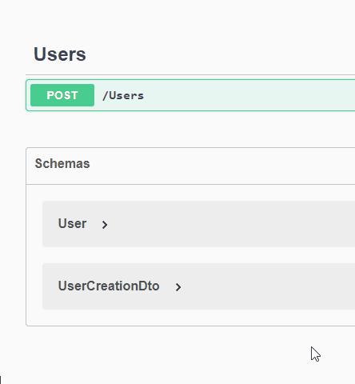
After you have made the request, and gotten a success response, you should be able to find a new file in your Web API component, a file containing our data.
If you inspect the file, you can see:
{"Users":[{"Id":1,"UserName":"Troels"}],"Todos":[]}
It is not particularly reader friendly, we will fix that. But, we can see the collection of Users, with my new User. And the collection of Todos are currently empty.
Let's make it more reader friendly. Open the FileData/FileContext.cs file. Navigate to the SaveChanges() method.
Modify it to be like this:
public void SaveChanges()
{
string serialized = JsonSerializer.Serialize(dataContainer, new JsonSerializerOptions
{
WriteIndented = true
});
File.WriteAllText(filePath, serialized);
dataContainer = null;
}
This will introduce line breaks to make things more readable. Test the endpoint again with another user, and inspect the file afterwards.
The file content should now look like this:
{
"Users": [
{
"Id": 1,
"UserName": "Troels"
},
{
"Id": 2,
"UserName": "Jakob"
}
],
"Todos": []
}
Get All Users
We are ready for the next feature, available in this branch on GitHub:
As a User I can get a list of all existing Users, so that I can assign Todos to them
In order to assign a Todo to a user, we need to be able to select between the users, i.e. retrieve them.
We will do a similar approach, with Domain Driven Design:
- First the application layer
- Then the Web API layer
- Then the data access layer
Let's go.
Logic Layer for Getting Users
Now, there is not really any business logic associated with getting a list of Users, so the functionality in this layer is going to be fairly simple.
Logic interface
First we need to define what kind of information is needed by the logic layer to retrieve users.
It could be nothing, if we just want all users.
It could be an Id or user name, if we just want a single user.
Or it could be a number of filtering criteria, if we had more information about a user.
We are going with the last, and we want to be able to search for users containing a piece of text. E.g. if i searched for "Ja" we might get users Jakob, Jane, Jan, Jasmine.
Now, the method in the interface could then look like this:
... GetUsers(string containsText);
However, if we later want to add more search criteria, I would have to modify potentially several method signatures across layers.
Instead, we want to define an object to contain the search variables, a DTO.
Note
We have here avoided "the primitive obsession anti pattern".
The search filters DTO
Inside Domain/DTOs directory, create the following class:
namespace Domain.DTOs;
public class SearchUserParametersDto
{
public string? UsernameContains { get; }
public SearchUserFiltersDto(string? usernameContains)
{
UsernameContains = usernameContains;
}
}
The property is marked with "?", i.e. string? to indicate this search parameter can be null, i.e. it should be ignored when searching users.
The interface method
We can now use our new search filter DTO in the method signature in the Logic interface, like so:
using Domain.DTOs;
using Domain.Models;
namespace Domain.LogicInterfaces;
public interface IUserLogic
{
public Task<User> Create(UserCreationDto dto);
public Task<IEnumerable<User>> GetAsync(SearchUserParametersDto searchParameters);
}
We return an IEnumerable
The dao interface method
Let us next define the method in the IUserDao interface. We do this before we start on the method implementation in UserLogic, because this implementation will need the method of the DAO interface.
In IUserDao add the same method as above:
public Task<IEnumerable<User>> GetAsync(SearchUserParametersDto searchParameters);
The logic implementation
Finally, we define the method in the UserLogic class. It doesn't do anything other than delegate to the layer below:
public Task<IEnumerable<User>> GetAsync(SearchUserParametersDto searchParameters)
{
return userDao.GetAsync(searchParameters);
}
Notice that userDao.GetAsync(searchParameters) returns a Task, but we don't need to await it, because we do not need the result here.
Instead, we actually just returns that task, to be awaited somewhere else.
Next step would be to implement the search funtionality in the UserFileDao class. It should currently be complaining about not defining an implementation for the method we just defined in IUserDao.
But first, a discussion. It's not needed for this tutorial, but maybe it causes you to reflect a little.
A comment on architecture
Now, notice how the UserLogic class doesn't do anything, when we ask for data. It just forwards the method call to the Data Access layer below. So, is there really a point in going through the Logic layer for this? It is a fair assumption all data requests will be similar, i.e. the logic layer will do nothing other than just forwarding the request to the Data Access Layer.
The point is, it may seem like silly extra work. We will do this work in this tutorial because it is just simpler for now, but there is another approach.
There is an architectural pattern called "Command Query Response Separation", or "CQRS". The idea here is that you can devide functionality into two areas: commands and queries, i.e. "do something" and "get something".
That means the "create, update, delete" operations are commands, and here we may need some extra logic, calculations, validations, before the command can be done. This work is done in the logic layer.
But for the "read" operations, there is no logic, so the CQRS pattern says to split things:
Have a vertical slice for CUD operations, and another vertical slice for R operations.
There are different approaches to this, and the seemingly most common one is somewhat complex, relying on various libraries. But we will discuss the basic idea.
Below is the "minimum effort" approach.
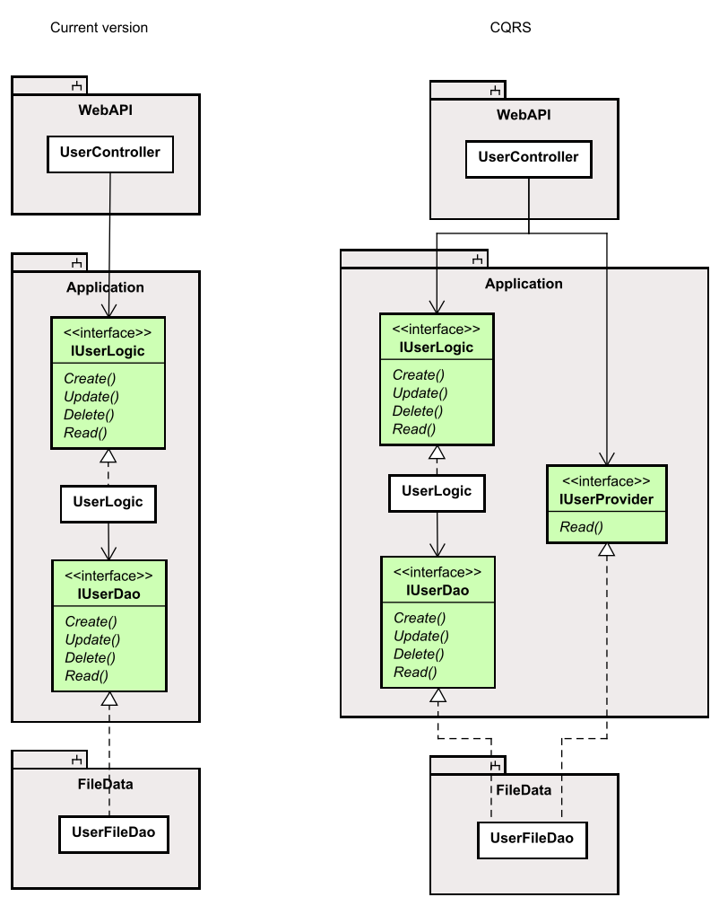
The left side is our current approach, in the right side we have split out the "Read" requests into another interface.
We have cut out the "useless" forwarding functionality in the UserLogic. If at some point, we need extra functionality when Reading in the logic layer, we can insert an implementation here, but because the UserController just knows about the interface, this modification should be fairly simple.
Taking it a step further, we could split the UserFileDao implementation into two classes as well.
The CQRS approach is not needed, or required. It is mainly to spark a thought.
Get Users from Data Access Layer
Now we need to fix the UserFileDao.cs. The compiler should be complaining, because we have added a method to IUserDao.
Implement the method in UserFileDao. It looks like this:
public Task<IEnumerable<User>> GetAsync(SearchUserParametersDto searchParameters)
{
IEnumerable<User> users = context.Users.AsEnumerable();
if (searchParameters.UsernameContains != null)
{
users = context.Users.Where(u => u.UserName.Contains(searchParameters.UsernameContains, StringComparison.OrdinalIgnoreCase));
}
return Task.FromResult(users);
}
First, the method signature. The return type is Task, as usual. We get a collection of users, matching the search criteria.
The first line of code takes the users from the context, and converts that ICollection to an IEnumerable. That's because of how the filtering is going to work, it uses IEnumerables. It's also a type of collection, just with fewer methods, it cannot be modified.
We then check if the search parameter is not null, in which case we want to apply it.
We do that in line 6 with the Where() method, which goes through all the users,
and selects those that matches the criteria specified by the lambda expression.
In the end the result is returned.
If we had more search parameters, we would for each of them make an if-statement to check if they should be applied.
With this approach we initially take all the users, and whittle them down search parameter by search parameter.
The Controller Endpoint
With the Logic layer and the Data Access layer in place, we just need to create an endpoint in the UsersController, so that a client can request the data.
It looks like this:
[HttpGet]
public async Task<ActionResult<IEnumerable<User>>> GetAsync([FromQuery] string? username)
{
try
{
SearchUserParametersDto parameters = new(username);
IEnumerable<User> users = await userLogic.GetAsync(parameters);
return Ok(users);
}
catch (Exception e)
{
Console.WriteLine(e);
return StatusCode(500, e.Message);
}
}
We mark the method with [HttpGet] so that GET requests to this controller ends here.
The return value is the IEnumerable<User> wrapper in an HTTP response message.
The argument is marked as [FromQuery] to indicate that this argument should be extracted from the query parameters of the URI.
The argument is of type string? indicating that it can be left out, i.e. be null.
A URI could look like:
https://localhost:7093/Users?username=roe
Indicating that we wish to filter the result by the user names which contains the text "roe".
Or if we want all users, we would use the URI:
https://localhost:7093/Users
If we later added other search parameters, e.g. age, we could have a URI like:
https://localhost:7093/Users?username=roe&age=25
Which would result in all users where the user name contains "roe" and their age is 25.
Test
You should now be able to test your Web API. You could first put in a couple of users, and then try various filter texts and verify the result.
Add Todo
We have the necessary user functionality in place. Now it's time to get started in the features related to the Todo items.
We will start with:
As a User I can add a new Todo, so that I can remember important things
We want to create a new Todo item, it contains some data, and is assigned to a specific user.
Same approach as usual:
- Application layer
- Logic interface
- DAO interface
- Logic imple
- Data Access layer
- JSON DAO implementation
- Web API layer
- New controller with endpoint
The order of 2 and 3 is not really relevant, they could be switched. If you want to do some integration testing along the way, the order may be relevant for you.
Application layer
SOLID
We are of course applying our SOLID design principles, in this case specifically the ones about separation of concern, i.e. the S and I.
The result is that we must create a new vertical slice to handle Todo items. We already have a vertical slice for Users, i.e. Controller, Logic, DAO. Now we need the same for Todos.
And again we apply a Domain Drive Design approach.\
- Logic interface: What is the contract? I.e. the data received and returned.
- DAO interface: What does the Logic class wish to persist?
- Logic implementation: What is the business logic involved in creating a Todo item.
New classes and interfaces
First we actually need the interface, let's call it "ITodoLogic", and put it in Application/LogicInterfaces.
Comment:
You will notice we are now organizing our code by layer. All DAO interfaces in the same directory, all logic interfaces in the same directory.
An alternative would be to create a directory for everything related to Users, and another for the classes and interfaces related to Todos. Sometimes this latter approach is preferred, because that kind of organization is more coherent. The important thing is you pick an organization-approach, and that you are consistent.
The ITodoLogic interfaces
We need to define the contract: what does the logic layer need, what does it give back? I.e. the argument and the return type.
Argument
In order to create a Todo we need to receive the following pieces of data:
- Title
- Owner ID
The Todo class contains another two properties not relevant here, so similar to when we created a User, we can either just reuse the Todo class and leave some properties empty, or we can create a specialized DTO.
We'll go with the latter.
Create the following class inside Domain/DTOs:
namespace Domain.DTOs;
public class TodoCreationDto
{
public int OwnerId { get; }
public string Title { get; }
public TodoCreationDto(int ownerId, string title)
{
OwnerId = ownerId;
Title = title;
}
}
Return
Similarly to the feature of creating a new User, some things are done to the Todo item, e.g. setting an ID. We therefore wish to return the finalized Todo item.
The interface method
That leaves us the following method in ITodoLogic:
using Domain.DTOs;
using Domain.Models;
namespace Application.LogicInterfaces;
public interface ITodoLogic
{
Task<Todo> CreateAsync(TodoCreationDto dto);
}
Remember that all methods in an interface are implicitly "public", we don't need to put that in front of the method.
The DAO interface
First, we need to create it. It goes inside Application/DaoInterfaces, call it "ITodoDao".
The method takes a Todo and returns a Todo (because the Id is set).
Like this:
Task<Todo> CreateAsync(TodoCreationDto dto);
The logic
We have the input and output. But what is supposed to happen inside the box? It's similar to what we did with the user, certain rules must be adhered to, when creating Todo:
- Title must be set, we can put a min and max length on it.
- The Todo must be assigned to an existing User
- The Id is set by the Data Access layer
- The completed status of a new Todo is always false, i.e. "not completed"
First, we need a new TodoLogic class:
public class TodoLogic : ITodoLogic
{
private readonly ITodoDao todoDao;
private readonly IUserDao userDao;
public TodoLogic(ITodoDao todoDao, IUserDao userDao)
{
this.todoDao = todoDao;
this.userDao = userDao;
}
public Task<Todo> CreateAsync(TodoCreationDto dto)
{
throw new NotImplementedException();
}
}
Fix import errors.
The class implements the interface, the method is defined, though currently without body. The constructor receives the ITodoDao, and also the IUserDao.
The methods
Then the functionality. We end up with the following two methods:
public async Task<Todo> CreateAsync(TodoCreationDto dto)
{
User? user = await userDao.GetByIdAsync(dto.OwnerId);
if (user == null)
{
throw new Exception($"User with id {dto.OwnerId} was not found.");
}
ValidateTodo(dto);
Todo todo = new Todo(user, dto.Title);
Todo created = await todoDao.Create(todo);
return created;
}
private void ValidateTodo(TodoCreationDto dto)
{
if (string.IsNullOrEmpty(dto.Title)) throw new Exception("Title cannot be empty.");
// other validation stuff
}
First, an existing user is searched for. We use a method GetById(), which does not exist. It is not easy to predict all the functionality needed up front, and it is okay to let the Logic layer drive these functionalities, and then implement them as needed.
We will fix this method shortly.
If no user is found, an exception is thrown.
Then the data is validated in the second method. I could put more rules in here, but that is less relevant for this tutorial. Again, this data could mostly be put into the Todo constructor, to ensure no invalid Todo is created. But the same discussion applies, as the last time.
A new Todo is instantiated and handed over to the Data Access layer, which does its thing, and returns the finalized object. That object is returned out of the Logic layer.
GetById
Let's just fix this compile error. You should be able to use alt + enter to quick fix this and create the method in the IUserDao interface.
It looks like this:
Task<User?> GetByIdAsync(int id);
This now causes a compile error in the implementing class, UserFileDao. So, let's get to that one.
Add Todo in Data Access Layer
We need to fix two things in this layer, the method for finding a user by id and then the method for storing the Todo.
Find User
You should currently have a compile error in TodoFileDao, because the interface defines a method not yet implemented in the class.
Let's go ahead and implement that method.
Given an Id we want to return the associated User, or null if none is found. Give it a go yourself first, and then look at the hint below:
hint
public Task<User?> GetByIdAsync(int id)
{
User? existing = context.Users.FirstOrDefault(u =>
u.Id == id
);
return Task.FromResult(existing);
}
Store Todo
First, we need a new TodoFileDao class, put it in FileData/DAOs.
Then we need the method implemented. It should receive the Todo, set an Id, persist the Todo, and then return it. Very similar to what we did with the Users.
Give this a go yourself, and then look at the hint below:
hint
public class TodoFileDao : ITodoDao
{
private readonly FileContext context;
public TodoFileDao(FileContext context)
{
this.context = context;
}
public Task<Todo> CreateAsync(Todo todo)
{
int id = 1;
if (context.Todos.Any())
{
id = context.Todos.Max(t => t.Id);
id++;
}
todo.Id = id;
context.Todos.Add(todo);
context.SaveChanges();
return Task.FromResult(todo);
}
}
Now we just need the Web API, and then we can test this feature.
Add Todo Controller Endpoint
We have the logic and data layer in place. We just need to provide access to the client, and for that we need:
- A new Controller class to handle Todos
- A POST endpoint to handle the creation of Todos
The Controller Class
Create a new "TodosController" in WebAPI/Controllers.
Set it up similarly to the UsersController, with the attributes and the inheritance. We need an ITodoLogic field variable as well. Give it a go, then look at the hint for verification.
hint
[ApiController]
[Route("[controller]")]
public class TodosController : ControllerBase
{
private readonly ITodoLogic todoLogic;
public TodosController(ITodoLogic todoLogic)
{
this.todoLogic = todoLogic;
}
}
This is almost identical to the other Controller class, we made, so if you forgot how things work, go back to slide 12.
The Endpoint
We now need the endpoint. You'll give this a go yourself as well first, it is very similar to the endpoint for creating a user.
- Mark it as a POST endpoint
- Hand over the data to the logic layer
- Return an informative response to the client
- In case of any errors, it is, as always, important to return information to the client
hint
[HttpPost]
public async Task<ActionResult<Todo>> CreateAsync([FromBody]TodoCreationDto dto)
{
try
{
Todo created = await todoLogic.CreateAsync(dto);
return Created($"/todos/{created.Id}", created);
}
catch (Exception e)
{
Console.WriteLine(e);
return StatusCode(500, e.Message);
}
}
This is almost identical to the other Controller class, we made, so if you forgot how things work, go back to slide 12.
See the final class here
Register Services
Now all the layers are in place. We just need to register services in the WebAPI/Program.cs class.
Add these two lines:
builder.Services.AddScoped<ITodoDao, TodoFileDao>();
builder.Services.AddScoped<ITodoLogic, TodoLogic>();
Test
That should be everything for this feature.
Let's test it.
Run your app, make a request to create a new Todo through Swagger, Postman, or Rider's built in HTTP client.
After a success response, go and have a look in WebAPI/data.json. Mine looks like this:
{
"Users": [
{
"Id": 1,
"UserName": "Troels"
},
{
"Id": 2,
"UserName": "Jakob"
}
],
"Todos": [
{
"Id": 1,
"Owner": {
"Id": 1,
"UserName": "Troels"
},
"Title": "Test todo",
"IsCompleted": false
}
]
}
The highlighted lines shows the collection of persisted Todos.
Notice how the Todo contains the same User data as a User found in the Users collection. If the User objects had more properties, this JSON storage approach would really not scale well.
Try to create a Todo with empty Title, or set the OwnerId to 0, to test the rainy scenario. It is always important to test that your system is robust and can handle abuse by the user. Users will always mistreat your system.

New Feature: View Todos
We are ready to start on the next feature:
As a User I can view all or filtered Todos, so that I can remember what to do
We wish to get a list of all Todos. We also want to be able to apply filtering. Maybe the user only wishes to see their own, or only un-completed items.
If a Todo had a deadline, we could add an ordering functionality. But that's in the next version.
Same approach as before:
- Application layer
- Data layer
- Web API layer
View Todos Logic Layer
We wish to retrieve a list of Todos, and we want to be able to apply filtering. This is very similar to what we did with the User search.
- We need a DTO to contain the search criteria
- We need a method in the Logic interface to take the search criteria and return a collection of Todos
- We need a method in the DAO interface with a similar method
- The logic implementation does nothing other than forward the method call (boooring)
Search Criteria DTO
We need to be able to search by the following:
- User name
- User ID
- Completed status
- Title contains a piece of text
So, we wrap these criteria into a DTO class, put it in Domain/DTOs, call it "SearchTodoParametersDto":
public class SearchTodoParametersDto
{
public string? Username { get;}
public int? UserId { get;}
public bool? CompletedStatus { get;}
public string? TitleContains { get;}
public SearchTodoParametersDto(string? username, int? userId, bool? completedStatus, string? titleContains)
{
Username = username;
UserId = userId;
CompletedStatus = completedStatus;
TitleContains = titleContains;
}
}
All properties are nullable, indicated with the ?, meaning the property can be null. That is not a surprise for the strings, you should by now know strings can be null.
But simple types like ints and booleans, they cannot normally be null. We do however need a way to say that e.g. CompletedStatus should not be applied when filtering. This then gives us three applications for CompletedStatus:
- Include only completed Todos, value is
true - Include only un-completed Todos, value is
false - Don't apply this filter, value is
null
The same reasoning holds for UserId.
Logic Interface
We need the following method in the ITodoLogic interface:
Task<IEnumerable<Todo>> Get(SearchTodoParametersDto searchParameters);
Data Interface
We need the same method signature in the ITodoDao interface.
Logic Implementation
Implement the method from the interface, all it does is call the same method on the todoDao field variable. Same as what we did when getting the collection of users.
Comment on logic implementation
Sometimes you need to return data, which is combined from different domain objects. There are two approaches:
- Just ask the DAO layer, and have this layer construct everything and return DTOs
- Ask the DAO layer for relevant domain objects, and let logic layer put things together into DTOs
Both approaches are doable. The first will result in many specific methods in your DAO interfaces, which some people are against. They believe in only basic CRUD operations.
The second will keep the DAO interfaces "pure", having only the simple CRUD operations, and not various read operations returning various DTOs. The benefit here is that you can have your DAO layer in place early, and not modify it. The drawback is that you will potentially need very many calls from the logic layer to the DAO layer, each resulting in database queries. This may not scale well, and slow the system down.
With a specific get method in the DAO interface, you might only need one database request.
Retrieve Todos from Data Access Layer
Your compiler should complain about the TodoFileDao class, because we added a new method to the ITodoDao interface.
So, let's implement the method. It is going to work in the same way as what we did when getting users. Give it a go yourself first.
After your own attempt, or if you're stuck, check out my approach in the hint below.
The part about searching by user name is slightly complicated, but see if you can figure that out yourself.
Remember, all search parameters can be used by themself, applied together with any other, or left out.
hint
public Task<IEnumerable<Todo>> GetAsync(SearchTodoParametersDto searchParams)
{
IEnumerable<Todo> result = context.Todos.AsEnumerable();
if (!string.IsNullOrEmpty(searchParams.Username))
{
// we know username is unique, so just fetch the first
result = context.Todos.Where(todo =>
todo.Owner.UserName.Equals(searchParams.Username, StringComparison.OrdinalIgnoreCase));
}
if (searchParams.UserId != null)
{
result = result.Where(t => t.Owner.Id == searchParams.UserId);
}
if (searchParams.CompletedStatus != null)
{
result = result.Where(t => t.IsCompleted == searchParams.CompletedStatus);
}
if (!string.IsNullOrEmpty(searchParams.TitleContains))
{
result = result.Where(t =>
t.Title.Contains(searchParams.TitleContains, StringComparison.OrdinalIgnoreCase));
}
return Task.FromResult(result);
}
Again, we just have one if-statement after the other, one for each search parameter.
The first case looks for all todos, where their Owner's username is equal to the search parameter, ignoring case.
The others should be fairly straight forward.
Web API Endpoint for Retrieval of Todos
Open TodosController.cs.
We need a new method so the client can request todos.
- It is a GET endpoint
- It needs arguments matching the search parameters.
- We need to handle exceptions
- The search parameters are wrapped into the DTO and forwarded to the Logic layer
Give it a go. Then look at the hint below for my solution and some comments.
hint
Did you remember to make all arguments nullable? Otherwise they will get a default value, e.g. the "completed status" will be set to false. That is not the intended behaviour.
Did you remember to mark the parameters with [FromQuery]?
[HttpGet]
public async Task<ActionResult<IEnumerable<Todo>>> GetAsync([FromQuery] string? userName, [FromQuery] int? userId,
[FromQuery] bool? completedStatus, [FromQuery] string? titleContains)
{
try
{
SearchTodoParametersDto parameters = new(userName, userId, completedStatus, titleContains);
var todos = await todoLogic.GetAsync(parameters);
return Ok(todos);
}
catch (Exception e)
{
Console.WriteLine(e);
return StatusCode(500, e.Message);
}
}
Now, if we have many search parameters, the number of method-arguments of the endpoint method is going to be fairly big, and that's somewhat inconvenient.
The problem is that with GET requests, we cannot include an object, like when we do POST requests. Otherwise we could just have the client create a SearchTodoParametersDto object and send that along.\
We could make this a POST request and have the client send a SearchTodoParametersDto, serialized as JSON. It goes a bit against intuition, but POST can be used to "send some data for processing, which may not result in a new object being created".
We could make a kind of hack, where the query parameter of the URI could contain a json object, and on the server side, we would deserialize that. But I'm not convinced I like that approach.
So, for now we have to accept the large number of arguments. Maybe I will stumble upon a better approach later.
Test
You should be able to test this endpoint now. Try with different filters. Maybe create a few more Todos so you have more different things to search for.
Completing a Todo Item
New feature. We are working towards CRUD operations for the Todo, i.e. create, read, update, delete.
And we currently have create, and read. Now it is time to update Todos, part of them at least, because we want to be able to mark a Todo as completed.
As a User I can complete a Todo, so that I can mark things as done
We want to be able to change the completed status.
Later, we also want to be able to change the owner, so that a Todo can be reassigned. And maybe it is at some point needed to change the title of the Todo.
This means we want to be able to send a Todo item to the server, have it verify the data, and then update an existing Todo.
We are therefore doing a little more than what is needed for this user story.
But, it is little extra work, and otherwise we might later have to go back and revise existing code, so that another property can be updated, and then again for a third property.
So, we batch this together.
RESTful
It would be preferable to implement the three features above separately:
- complete a Todo
- re-assign a Todo
- update the title of a Todo
This would then result in three different endpoints in the Web API, i.e. three PATCH endpoints, because we use PATCH when updating a resource.
However, a RESTful Web API is organized around resources and CRUD operations, not all kinds of specific actions.
We could abuse the Web API and make three endpoints with URIs like:
PATCH /todos/complete/
PATCH /todos/reassign/
PATCH /todos/update/
But this goes against the REST standard.
Instead, we have to bundle all kinds of updates to the Todo into one endpoint:
PATCH /todos
And have just one vertical path through the server for everything update related.
Regarding the URI, we could put an ID here, or the ID can go into the argument. We will just do the latter.
So, if you are in this position, you will have to make a choice. In our case, we follow conventions and stick with the one endpoint.
Let's go
Same approach: application first, then data layer, and then Web API.
Complete Todo Logic
We will start by defining the input and output of the application layer, i.e. the method in the interface.
Again, we could reuse the Todo, but that would require sending along an entire User object too. That is not necessary. Instead, we make a new TodoUpdateDto:
public class TodoUpdateDto
{
public int Id { get; }
public int? OwnerId { get; set; }
public string? Title { get; set; }
public bool? IsCompleted { get; set; }
public TodoUpdateDto(int id)
{
Id = id;
}
}
The idea for this update, is that we only send what needs to change.
Therefore most of the properties are nullable, i.e. if they have no value, no change will be applied on the server.
This approach scales better. If the Todo had a large number of properties, but we want to only change one, we would otherwise have to send the complete Todo item, with a lot of redundant data.
The Id is required, so it is in the constructor. The rest are optional, so they will be set using the object initializer.
Nothing needs to be returned. If the update is a success, the client will already have the data. If we had some property, which the server would re-calculate based on the updated data, we might want to return the resulting Todo to the client. That is, however, not our case this time.
First the Logic interface, then the DAO interface, and then the Logic implementation
Logic Interface
It receives a TodoUpdateDto and it returns nothing.
In case of errors, we throw exceptions.
The method then looks like:
Task UpdateAsync(TodoUpdateDto todo);
Put that method in the ITodoLogic interface.
DAO Interface
We are going to need two methods here.
Update
The DAO interface needs a Todo objet, and there is no need to return anything. This means the Logic implementation will convert from TodoUpdateDto to Todo.
Task UpdateAsync(Todo todo);
Get By Id
The other method is to retrieve a single Todo given an Id.
We have a GetAsync() method in the DAO interface, however, it returns a collection.
We could probably use this method, but I prefer specialized method to get one Todo.
Task<Todo> GetByIdAsync(int id);
Logic Implementation
In the TodoLogic class, implement the new method from the interface.
What needs to be done?
- We need to verify that there is an existing Todo with the same ID as the one provided. When creating a new User, we looked for an existing User. This functionality could also have been placed in the DAO implementation. But I consider this check as part of the logic of creating/updating, and so I believe it belongs in the Logic layer. The drawback is that we do two interactions with the database, where we might only strictly need one, if we moved the check. In this case the drawback is accepted.
- We need to verify the owner ID corresponds to an existing user.
- We need to validate the new Todo data. Luckily we have that logic already, from when we created a Todo. However, we will have to update the method to take a
Todoinstead ofTodoCreationDto. - We could have more rules, e.g. a User may have a maximum of 5 Todos assigned to them.
- If the Users had Roles, and the Todos had categories, we could have rules about what kind of category Todos can be assigned to which Roles.
- Maybe it is not allowed to un-complete a completed Todo, and users should instead create new.
This leads us to the method implementation. Give it a go yourself:
- Check that there is an existing Todo to update
- Validate the data, but modifying the existing
ValidateTodoto take another type of argument. - Hand over the Todo to the Data Access layer, through the ITodoDao interface.
This tutorial will ignore most of the business rules. That kind of logic is not in focus here. But the reader is encouraged to implement various rules themself.
We need a few things, so I will take you through it.
Todo
Currently, the Todo class should have no mutator on the IsCompleted property. Add that:
public class Todo
{
public int Id { get; set; }
public User Owner { get; }
public string Title { get; }
public bool IsCompleted { get; set; }
public Todo(User owner, string title)
{
Owner = owner;
Title = title;
}
}
Again, we could put logic like checking that a completed Todo is not un-completed into the Todo class. But, consistency is key, and as we previously made the decision to put validation logic into the application layer, we will stick with that decision.
Logic update method
We are now ready for the logic implementation. Not all suggested logic from above will be included in this tutorial. Here we go.
public async Task UpdateAsync(TodoUpdateDto dto)
{
Todo? existing = await todoDao.GetByIdAsync(dto.Id);
if (existing == null)
{
throw new Exception($"Todo with ID {dto.Id} not found!");
}
User? user = null;
if (dto.OwnerId != null)
{
user = await userDao.GetByIdAsync((int)dto.OwnerId);
if (user == null)
{
throw new Exception($"User with id {dto.OwnerId} was not found.");
}
}
if (dto.IsCompleted != null && existing.IsCompleted && !(bool)dto.IsCompleted)
{
throw new Exception("Cannot un-complete a completed Todo");
}
User userToUse = user ?? existing.Owner;
string titleToUse = dto.Title ?? existing.Title;
bool completedToUse = dto.IsCompleted ?? existing.IsCompleted;
Todo updated = new (userToUse, titleToUse)
{
IsCompleted = completedToUse,
Id = existing.Id,
};
ValidateTodo(updated);
await todoDao.UpdateAsync(updated);
}
private void ValidateTodo(Todo dto)
{
if (string.IsNullOrEmpty(dto.Title)) throw new Exception("Title cannot be empty.");
// other validation stuff
}
First, this is a somewhat long method, and it would benefit from being refactored into smaller methods, but that will add some complexity to explaining things.
The idea is we receive the DTO, and only properties with a value, should be updated.
The method first finds an existing Todo, we cannot update something non-existing.
Then, if the dto specifies a User, the assignee should be updated, so the new assignee User is found.
Then we check if the completed status should be updated (i.e. the property is not null), and the Todo is not completed and is changed to un-completed. I.e. we are not allowed to un-complete a completed Todo.
Then three variables are defined. We use the null coalescing operator "??" to get the correct value. It works like this: if the value of the dto is not null, use that value. Otherwise use the value on the right side of ??, i.e. the value from the existing Todo.
Then a new Todo is created with the (potentially) updated data.
Alternatively, the existing Todo could be modified,
but because it is being referenced from the FileContext class,
i.e. still kept in the list, we may encounter unwanted behaviour:
If the validation in line 27 does not go through,
we would need to undo the modifications.
Yes, we are doing something because of the implementation of the DAO layer. We could make the DAO layer return a clone instead. We will stick with this solution for now, it is of little impact
Finally the new Todo with updated values is passed to the DAO layer.
Next up
Let's go and fix that layer next.
Update Todo Data Access Layer
In TodoFileDao implement the new methods from the interface, UpdateAsync() and GetByIdAsync().
Get by ID
The GetByIdAsync() should just take Id and return either a matching Todo or return null. Give this a go yourself first, then look at the hint.
hint
public Task<Todo?> GetByIdAsync(int todoId)
{
Todo? existing = context.Todos.FirstOrDefault(t => t.Id == todoId);
return Task.FromResult(existing);
}
You have seen this before, when finding a User.
Update
The UpdateAsync() must update the existing Todo. To do this, we will just do a remove followed by an add. If nothing could be removed, then the Todo does not exist, and an exception should be thrown.
We cannot update something, which do not exist.
Remember to save.
Give it a go, then look at the hint below.
hint
public Task UpdateAsync(Todo toUpdate)
{
Todo? existing = context.Todos.FirstOrDefault(todo => todo.Id == toUpdate.Id);
if (existing == null)
{
throw new Exception($"Todo with id {toUpdate.Id} does not exist!");
}
context.Todos.Remove(existing);
context.Todos.Add(toUpdate);
context.SaveChanges();
return Task.CompletedTask;
}
First the existing todo is found by its ID. If none exist, an exception is thrown. I know, we also checked for the existing Todo in the logic layer, but this method may potentially be reused somewhere else. This is just an extra safety measure.
We remove the existing Todo from the collection. Then add the new Todo. Essentially we overwrite the existing.
The changes are saved, i.e. written to the file.
Task.Completed task is returned, because the return type is Task, and the method is not marked "async";
Complete Todo Web API Endpoint
We move on to the Web API endpoint.
Give it a try yourself first, with this method.
It should be a PATCH, returns Task<ActionResult> and receives a TodoUpdateDto.
hint
[HttpPatch]
public async Task<ActionResult> UpdateAsync([FromBody] TodoUpdateDto dto)
{
try
{
await todoLogic.UpdateAsync(dto);
return Ok();
}
catch (Exception e)
{
Console.WriteLine(e);
return StatusCode(500, e.Message);
}
}
Now test that you can update a Todo. Verify the changes by call the GET endpoint or checking the data.json file in the WebAPI project.
Generally a PATCH request will contain only the changes. You should be able to remove some parts of the json sent, and it should still work.
For example, if you just want to complete Todo with ID 1, you would send:
{
"id": 1,
"isCompleted": true
}
The other properties of the TodoUpdateDto object will just be defaulted to null, and therefore no changes are made to those properties of the existing Todo.
Deleting a Todo Item
We are ready for the next feature, deleting a Todo:
As a User I can delete a Todo, so that I can clean up
You know the drill: logic layer, DAO layer, Web API layer.
Delete Todo Logic Layer
This should also be familiar.
First we consider input, output, and behaviour.
Then we define interfaces for logic and dao. And then we implement the logic.
Input/output
The input is just an ID, we need no more information than that. That is true for both logic and Data Access interfaces.
The output is nothing.
Behaviour
Is there any logic associated with deleting a Todo?
Suggestions:
- A Todo can only be deleted, if it is completed
- A Todo can only be deleted by certain Roles, if we had those
- A Todo can only be deleted x hours/days after it was completed
You can probably come up with more ideas yourself. We will do only the first point.
Logic/DAO Interface
The input is an ID, and there is not output. The two interfaces need the same method signature:
Task DeleteAsync(int id);
Put this method in both interfaces
Logic Implementation
We will do the check of the completed status, so only completed Todos can be deleted.
The method in the TodoLogic class must then:
- Fetch existing Todo
- Check that the completed status is
true, otherwise throw exception - Call the
DeleteAsync()method on ITodoDao interface
Give it a go, then look at the hint.
hint
public async Task DeleteAsync(int id)
{
Todo? todo = await todoDao.GetByIdAsync(id);
if (todo == null)
{
throw new Exception($"Todo with ID {id} was not found!");
}
if (!todo.IsCompleted)
{
throw new Exception("Cannot delete un-completed Todo!");
}
await todoDao.DeleteAsync(id);
}
The Todo is found, and checked for existence. The completed status is checked. If all is good, the id is passed to the Data Access layer for handling.
Delete Todo in Data Access Layer
You should already have a compile error in TodoFileDao because of the added method to the ITodoDao interface. Let's fix this, by implementing the method.
We actually did the remove part, when doing the Update method. We could refactor that part out into our new method, and have the Update method first call RemoveAsync() and then CreateAsync().
Or you can just copy the remove part of Update() to the Delete method. Your pick.
hint
public Task DeleteAsync(int id)
{
Todo? existing = context.Todos.FirstOrDefault(todo => todo.Id == id);
if (existing == null)
{
throw new Exception($"Todo with id {id} does not exist!");
}
context.Todos.Remove(existing);
context.SaveChanges();
return Task.CompletedTask;
}
Delete Todo Web API Endpoint
Finally, we need the endpoint for the client to call.
- It is an HttpDelete method
- It returns nothing, i.e. Task
- The argument is an int, the ID, taken from the route
Give it a go.
hint
[HttpDelete("{id:int}")]
public async Task<ActionResult> DeleteAsync([FromRoute] int id)
{
try
{
await todoLogic.DeleteAsync(id);
return Ok();
}
catch (Exception e)
{
Console.WriteLine(e);
return StatusCode(500, e.Message);
}
}
The [HttpDelete("")] marks this method for DELETE requests. The part in the parenthesis is the sub-uri, indicating you here put an id of type int.
A URI could be: DELETE /todos/7
This would then request to delete Todo with id 7.
The id sub-part of the URI is passed as the argument, because the argument is marked [FromRoute], meaning this argument is found in the URI. The argument variable must be named the same as in the URI template, i.e. "id".
Get Todo By Id
If we were to have a feature like
As a User I can update title of a Todo, so that I can fix mistakes made when created
or
As a User I can re-assign a Todo, so that others can take over if the assignee is too busy
The flow would be to first retrieve the relevant Todo from the server, make various modifications on the client side, and send those changes back again to the server.
We will include this feature in the client, in the next tutorial.
Implement the functionality
We can already update Todos with the PATCH endpoint implemented previously. But we cannot get a single Todo. We could use the endpoint, which returns a collection of Todos, but for practice, let's make a specialized endpoint.
You are to implement this functionality now. Here are a few key points:
- Web API
- The endpoint is a GET with URI /todos/
- Logic interface
- The argument is an int
- The result is the Todo, or a DTO, that is up to you. Maybe you don't want to send back the nested User object, but just the user name
- Remember asynchronous
- Logic implementation
- Nothing here really, other than forwarding the call to the Data Access Layer
- Alternatively, if you decide to return a DTO, the DAO already has a method to retrieve a Todo by id. You would then convert this to a DTO.
- DAO
- There is already a
GetByIdAsync()method. You could reuse this.
- There is already a
Conclusion
This concludes the tutorial for now. We have implemented 6 user stories in total: create and get for Users, and CRUD for Todos.
The reader may implement update and delete functionality for users, if they wish.
The next part of the tutorial series will continue with a Blazor-WASM client. In part 3 the JSON storage will be swapped out for SQLite and Entity Framework Core.